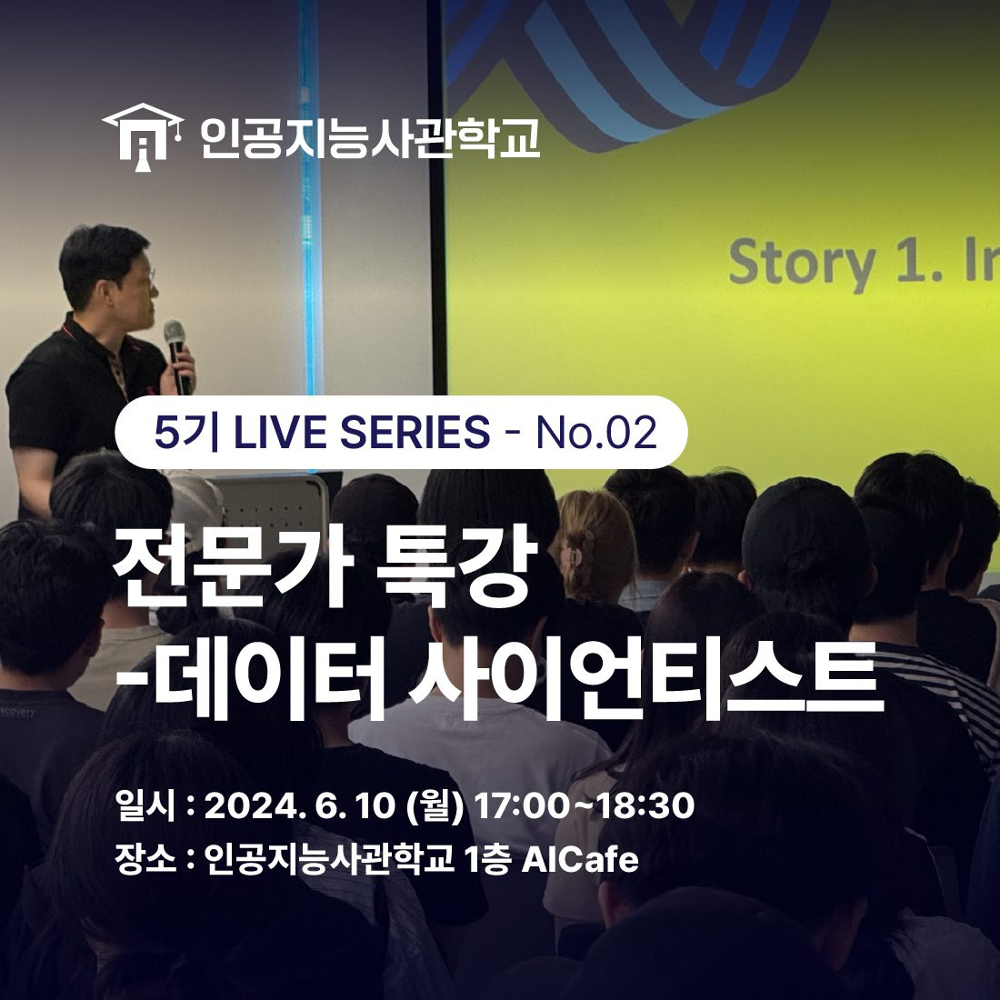
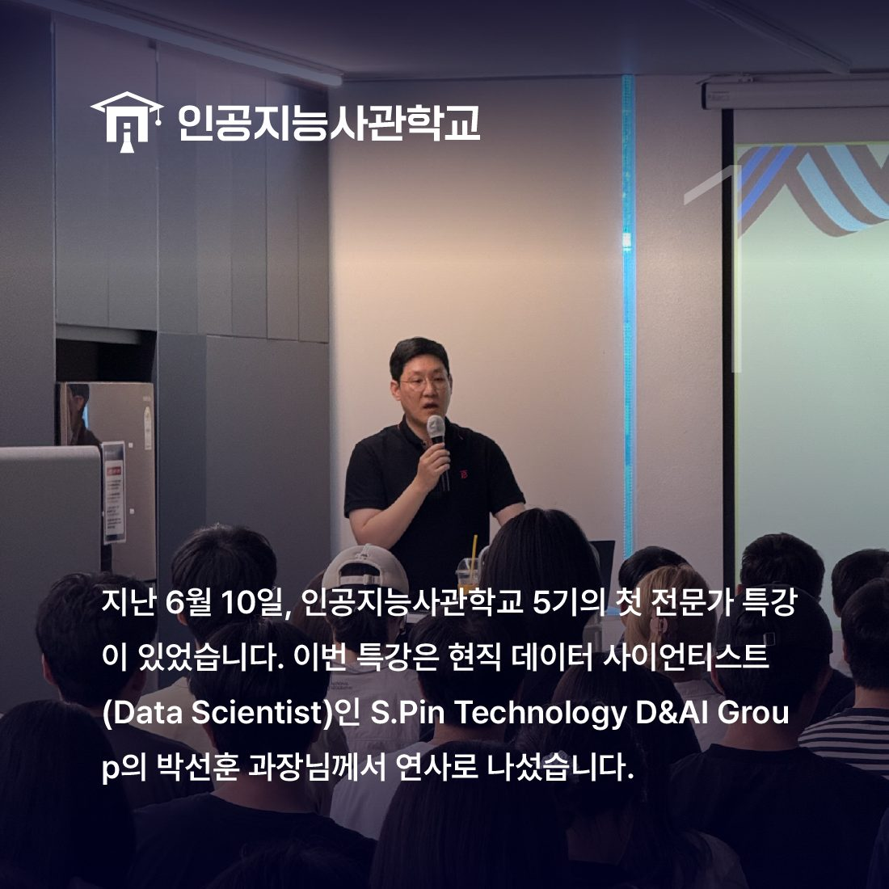
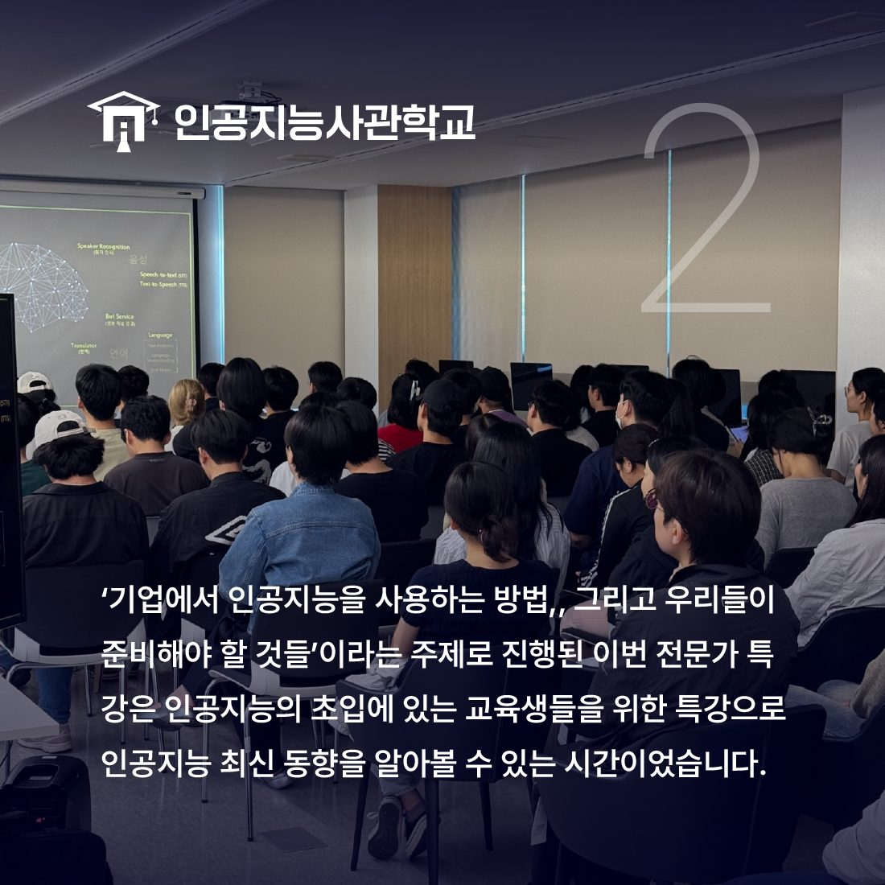
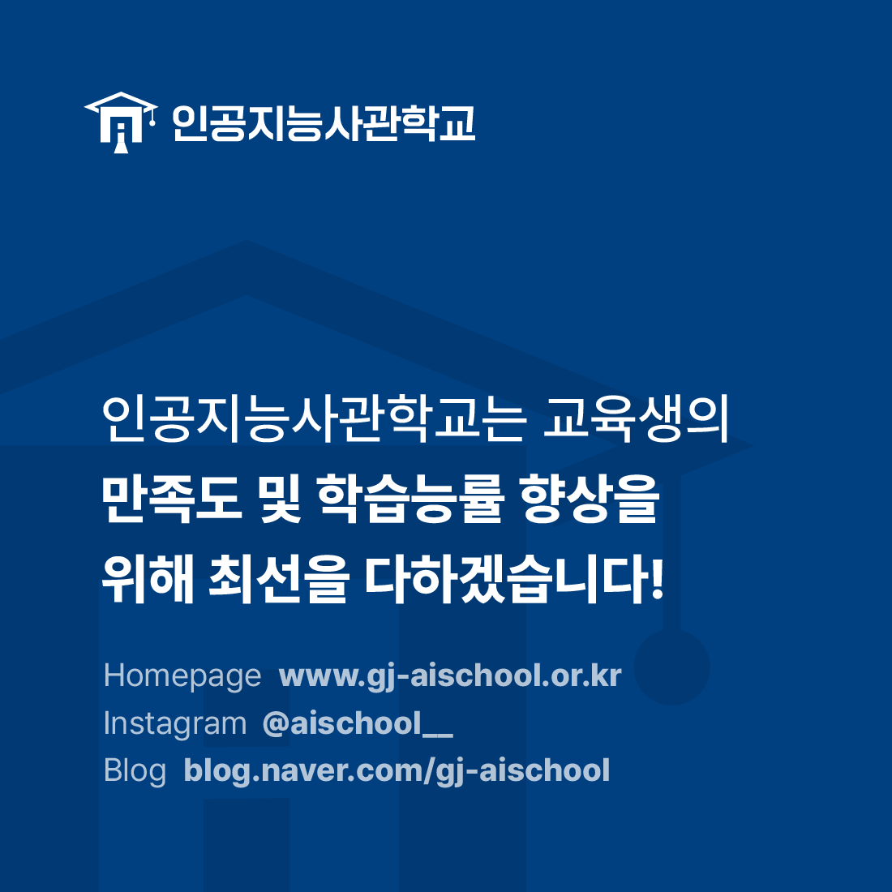

안녕하세요! 인공지능사관학교입니다. 😆

지난 6월 10일, 인공지능사관학교 1층 AI Cafe에서
인공지능사관학교 5기의
첫 전문가 특강이 있었습니다!👏

이번 특강의 연사는 현직 데이터 사이언티스트인
S.Pin Technology D&AI Group의 박선훈 과장님으로
'기업에서 인공지능을 사용하는 방법, 그리고 우리들이 준비해야 할 것들'
이라는 제목으로 특강이 진행됐습니다.

인공지능 교육의 초입에 있는 교육생들을 위한 특강으로
인공지능 최신 동향과 실무 활용 예시 등을 알 수 있었습니다.
특강에 참여한 교육생은 "인공지능이
실제로 어떻게 사용되는지 알 수 있는 좋은 시간이었다."고
소감을 남겼습니다.
